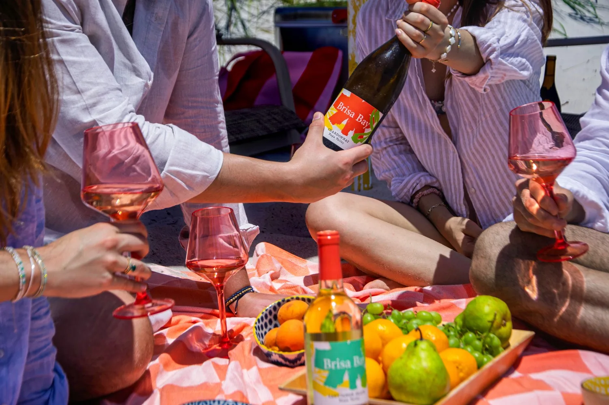
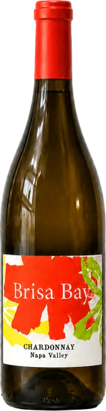
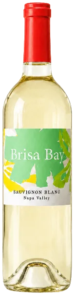
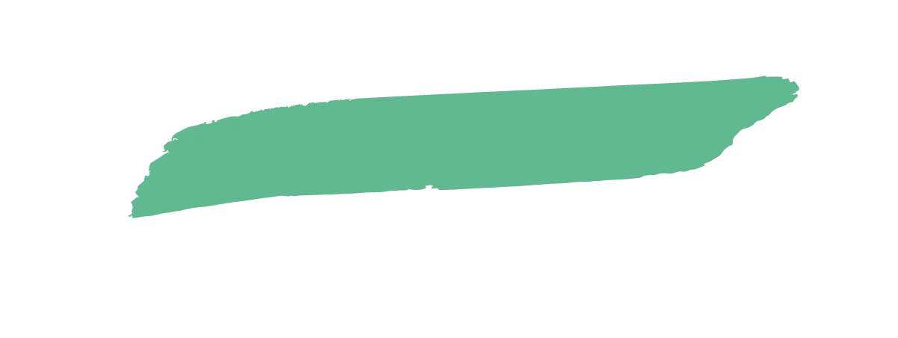

Brisa Bay — bright, unpretentious Napa Valley wine

Where the water meets the vines, the San Pablo Bay breeze inspired our family to take our deep Napa roots in a fresh direction. Working with growers who put their hearts into the soil, we craft vibrant wines with no barriers or exclusivity.
This is wine meant to be lived.
Our Wines
Brisa Bay Napa Valley Chardonnay
A brighter side of Napa Valley made for warm afternoons. Waves of ripe white peach and fresh citrus meet a tender texture and a mouthwatering acidity that quietly invites another sip.
Pairs with grilled halibut, roast chicken, ripe peaches and soft cheeses.
Brisa Bay Napa Valley Sauvignon Blanc
Our very first release: bright, energetic, and easygoing. Guava, passionfruit, and tropical flowers lead into juicy pineapple, lime, and a cool vein of stony minerality that lingers.
Pairs with oysters, ceviche, herby salads and fresh goat cheese.


Skip the Cellar
Find a Bottle
No pretense
No wine snobs
No occasion required
We skip the barriers to share the wines we love with anyone who wants to enjoy them. Find Brisa Bay at your favorite local spots.
Locate Brisa Bay
Bottled Moments
A gallery of real afternoons, sent in by the people drinking them.
Want yours up here? Post your pour with #BrisaBay and tag @brisabaywines — we add new moments every month.